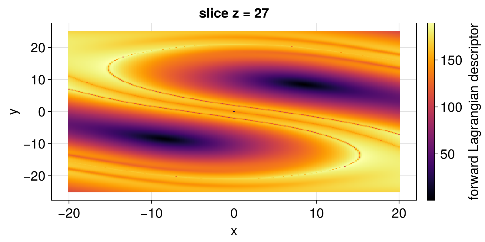
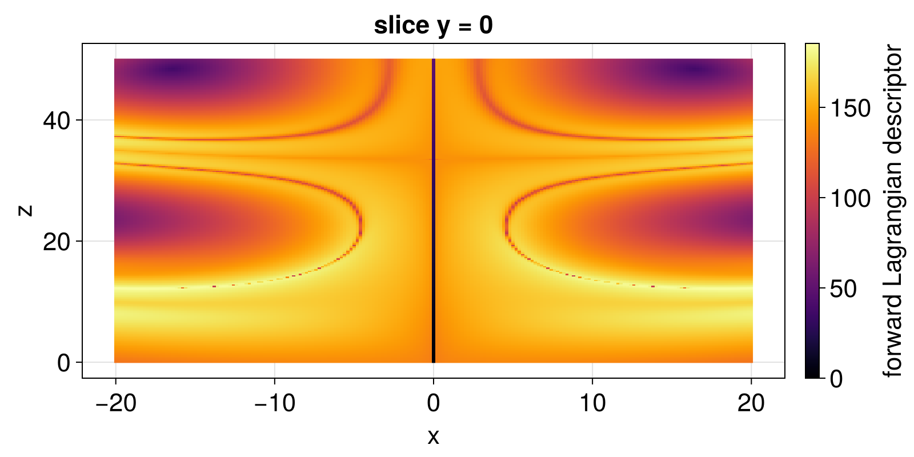
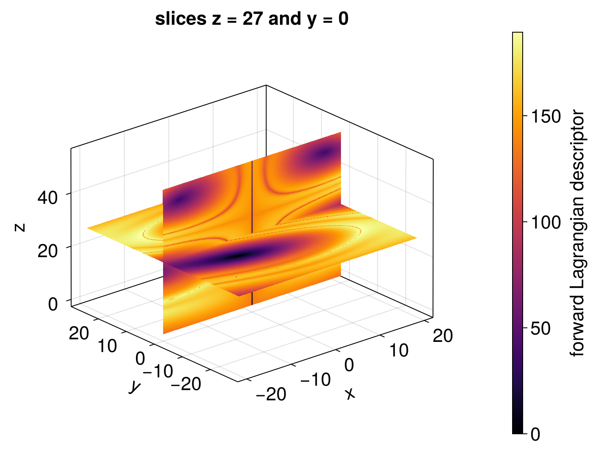
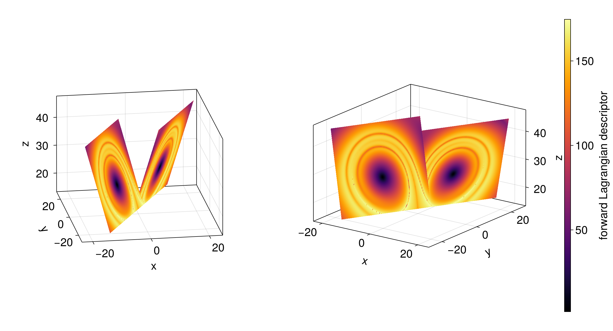

Lorenz system
The Lorenz system
\[\begin{cases} \dot x = \sigma (y - x), \\ \dot y = x (\rho - z) - y, \\ \dot z = x y - \beta z, \end{cases}\]
with $\sigma = 10$, $\rho = 28$ and $\beta = 8/3$, has a chaotic attractor. Its phase space is three-dimensional, so we compute the Lagrangian descriptors on a two-dimensional slice of initial conditions, here the plane $z = 27$, through the nontrivial fixed points $(\pm\sqrt{72}, \pm\sqrt{72}, 27)$. The plot recipe recognizes the grid in the components that vary, $x$ and $y$.
Backward in time, the volumes of phase space expand and the solutions diverge, so we only compute the forward descriptors, which reveal the stable manifolds.
using LagrangianDescriptors, OrdinaryDiffEq, CairoMakie
using LinearAlgebra: norm
function lorenz!(du, u, p, t)
σ, ρ, β = p
x, y, z = u
du[1] = σ * (y - x)
du[2] = x * (ρ - z) - y
du[3] = x * y - β * z
end
prob = ODEProblem(lorenz!, zeros(3), (0.0, 1.5), (10.0, 28.0, 8 / 3))
M(du, u, p, t) = norm(du)
uu0 = [[x, y, 27.0] for y in range(-25, 25, length = 201), x in range(-20, 20, length = 201)]
lagsol = solve(LagrangianDescriptorProblem(prob, M, uu0; direction = :forward), Tsit5())
fig, ax, plt = heatmap(lagsol; axis = (title = "slice z = 27", xlabel = "x", ylabel = "y"))
Colorbar(fig[1, 2], plt; label = "forward Lagrangian descriptor")
fig
The dark regions around the fixed points are the solutions that stay close to them, and the sharp curves are the intersections of the stable manifold of the origin, which separates the two wings of the attractor, with the plane. With a longer time window, more of its folds appear, but they also become thinner.
Other slices are obtained with other collections of initial conditions, and the keyword idxs chooses the components to plot. For instance, on the plane $y = 0$:
uu0_xz = [[x, 0.0, z] for z in range(0, 50, length = 201), x in range(-20, 20, length = 201)]
lagsol_xz = solve(LagrangianDescriptorProblem(prob, M, uu0_xz; direction = :forward), Tsit5())
fig, ax, plt = heatmap(lagsol_xz; idxs = (1, 3), axis = (title = "slice y = 0", xlabel = "x", ylabel = "z"))
Colorbar(fig[1, 2], plt; label = "forward Lagrangian descriptor")
fig
The two slices can also be seen together in three dimensions, with three components in idxs, and a common colorrange, so that their colors are comparable. CairoMakie, however, draws each plot over the previous ones, without hiding the parts that should be behind, so we split each plane at the line where they intersect, here through the middle of both, and draw the four half-planes from the farthest to the nearest, for the default view of Axis3. (GLMakie and WGLMakie hide the parts behind by themselves.)
solve_forward(uu0) = solve(LagrangianDescriptorProblem(prob, M, uu0; direction = :forward), Tsit5())
xs = range(-20, 20, length = 201)
# the plane z = 27, split at y = 0, and the plane y = 0, split at z = 27
back_of_z27 = solve_forward([[x, y, 27.0] for y in range(0, 27, length = 101), x in xs])
front_of_z27 = solve_forward([[x, y, 27.0] for y in range(-27, 0, length = 101), x in xs])
top_of_y0 = solve_forward([[x, 0.0, z] for z in range(27, 54, length = 101), x in xs])
bottom_of_y0 = solve_forward([[x, 0.0, z] for z in range(0, 27, length = 101), x in xs])
# from the farthest to the nearest
halves = (back_of_z27, bottom_of_y0, top_of_y0, front_of_z27)
colorrange = extrema(reduce(vcat, [lagsol() for lagsol in halves]))
fig = Figure(size = (700, 550))
ax = Axis3(fig[1, 1]; title = "slices z = 27 and y = 0", xlabel = "x", ylabel = "y", zlabel = "z", viewmode = :fit)
plts = [plot!(ax, lagsol; idxs = (1, 2, 3), colorrange) for lagsol in halves]
Colorbar(fig[1, 2], plts[1]; label = "forward Lagrangian descriptor")
fig
Any of the half-planes can be hidden, e.g. with plts[4].visible = false for the front one, to see the ones behind it. The axis then only spans the visible ones, unless its limits are given, e.g. with limits = ((-20, 20), (-27, 27), (0, 54)) in Axis3.
Initial conditions on the wings of the attractor
The initial conditions need not be on a plane. Each wing of the Lorenz attractor is close to a plane, and the two planes meet along a line below the attractor, forming an inverted wedge. We find these planes from a long solution on the attractor: the plane of each wing passes through the mean of its points, and its normal is the direction in which they vary the least, given by a singular value decomposition.
using LinearAlgebra: svd, normalize, cross, dot
# a long solution on the attractor, without its transient
sol = solve(remake(prob; u0 = [1.0, 1.0, 1.0], tspan = (0.0, 100.0)), Tsit5(); saveat = 0.01)
points = sol.u[sol.t .> 10]
points_pos = filter(u -> u[1] > 0, points) # the wing with x > 0
points_neg = filter(u -> u[1] < 0, points) # the wing with x < 0
# the plane of a wing, through the mean `c` of its points, with normal `n`
function wing_plane(points)
c = sum(points) / length(points)
n = svd(reduce(hcat, points .- Ref(c))').V[:, 3]
return (; c, n)
end
plane_pos = wing_plane(points_pos)
plane_neg = wing_plane(points_neg)
# the line where the two planes meet, through `o` in the direction `d`
d = normalize(cross(plane_pos.n, plane_neg.n))
o = [plane_pos.n'; plane_neg.n'; d'] \ [dot(plane_pos.n, plane_pos.c), dot(plane_neg.n, plane_neg.c), 0.0]3-element Vector{Float64}:
0.025189554093966147
0.09515067623710814
15.050628363075255The two planes meet along the line through o, at the height $z \approx 15$, in the horizontal direction d. On each plane, we take a grid of initial conditions starting at this line and covering the points of the wing, and we compute the forward descriptors:
# a grid on the plane of a wing, from the line where the planes meet, covering its points
function wing_grid(plane, points)
w = normalize((plane.c - o) - dot(plane.c - o, d) * d) # in the plane, away from the line
along = extrema(dot(u - o, d) for u in points)
away = maximum(dot(u - o, w) for u in points)
return [o + a * d + b * w for b in range(0, away, length = 101), a in range(along..., length = 151)]
end
lagsol_pos = solve_forward(wing_grid(plane_pos, points_pos))
lagsol_neg = solve_forward(wing_grid(plane_neg, points_neg))
colorrange = extrema(vcat(lagsol_pos(), lagsol_neg()))
fig = Figure(size = (1200, 650))
axes = [Axis3(fig[1, k]; azimuth, elevation = 0.1π, aspect = :data, viewmode = :fit,
xlabel = "x", ylabel = "y", zlabel = "z", xticks = -20:20:20, yticks = -20:20:20)
for (k, azimuth) in enumerate((1.45π, 1.7π))]
# from these views, the wing with x < 0 is the nearest, so it is drawn last
plts = [plot!(ax, lagsol; idxs = (1, 2, 3), colorrange) for ax in axes for lagsol in (lagsol_pos, lagsol_neg)]
Colorbar(fig[1, 3], plts[1]; label = "forward Lagrangian descriptor")
fig
On each wing, the dark spot is the fixed point of that wing, and the descriptors show the folds of the stable manifold of the origin crossing the wing, around which the solutions turn before switching to the other wing.
Sweeping through the attractor
Two sequences of slices sweep through the attractor: horizontal slices $z = c$, for increasing values of $c$, and then vertical slices $x = c$, also for increasing values of $c$. We compute the forward descriptors on each slice, with a common color range, so that the slices are comparable:
heights = 5:45 # the horizontal slices z = c
abscissas = -20:20 # the vertical slices x = c
xs = range(-20, 20, length = 151)
ys = range(-25, 25, length = 151)
zs = range(0, 50, length = 151)
horizontal = [solve_forward([[x, y, c] for y in ys, x in xs]) for c in heights]
vertical = [solve_forward([[c, y, z] for z in zs, y in ys]) for c in abscissas]
colorrange = extrema(reduce(vcat, [lagsol() for lagsol in [horizontal; vertical]]))We show them in a video, with each slice next to the attractor, cut by the plane of the slice. The current frame is an Observable, which updates the figure in each frame recorded with record, with a plane and a heatmap for the horizontal slices, and others for the vertical ones, shown in turn. Since CairoMakie draws each plot over the previous ones, the part of the attractor behind the plane is drawn before it, and the part in front of it after it, with NaN to break the lines:
# the frames: the horizontal slices, and then the vertical ones
frames = [[(:z, i) for i in eachindex(heights)]; [(:x, i) for i in eachindex(abscissas)]]
frame = Observable(frames[1])
# seen from above and from x > c, behind a horizontal plane is below it, and behind
# a vertical plane x = c is x < c
is_behind((direction, i), u) = direction == :z ? u[3] <= heights[i] : u[1] <= abscissas[i]
points_on_attractor = Point3f.(points) # from the long solution of the previous section
behind = @lift([is_behind($frame, u) ? u : Point3f(NaN) for u in points_on_attractor])
in_front = @lift([is_behind($frame, u) ? Point3f(NaN) : u for u in points_on_attractor])
fig = Figure(size = (1000, 500))
ax3 = Axis3(fig[1, 1]; title = "the attractor and the slice", xlabel = "x", ylabel = "y", zlabel = "z",
azimuth = 1.7π, elevation = 0.12π, viewmode = :fit, xticks = -20:20:20, yticks = -20:20:20)
lines!(ax3, behind; color = :gray30, linewidth = 0.5)
zplane = mesh!(ax3, @lift(Rect3f(Vec3f(-20, -25, heights[$frame[1] == :z ? $frame[2] : 1]), Vec3f(40, 50, 0.2)));
color = (:orange, 0.4), shading = false)
xplane = mesh!(ax3, @lift(Rect3f(Vec3f(abscissas[$frame[1] == :x ? $frame[2] : 1], -25, 0), Vec3f(0.2, 50, 50)));
color = (:orange, 0.4), shading = false)
lines!(ax3, in_front; color = :gray30, linewidth = 0.5)
ax = Axis(fig[1, 2]; aspect = DataAspect(),
title = @lift($frame[1] == :z ? "slice z = $(heights[$frame[2]])" : "slice x = $(abscissas[$frame[2]])"),
xlabel = @lift($frame[1] == :z ? "x" : "y"), ylabel = @lift($frame[1] == :z ? "y" : "z"))
zheatmap = heatmap!(ax, @lift(horizontal[$frame[1] == :z ? $frame[2] : 1]); colorrange)
xheatmap = heatmap!(ax, @lift(vertical[$frame[1] == :x ? $frame[2] : 1]); idxs = (2, 3), colorrange)
Colorbar(fig[1, 3], zheatmap; label = "forward Lagrangian descriptor")
colgap!(fig.layout, 1, 50) # room between the z label of the 3D axis and the heatmap
record(fig, "lorenz_sweeps.mp4", frames; framerate = 8, px_per_unit = 1) do f
frame[] = f
zplane.visible = zheatmap.visible = f[1] == :z
xplane.visible = xheatmap.visible = f[1] == :x
reset_limits!(ax)
endAt the bottom of the attractor, the horizontal slices cut the stable manifold of the origin, a surface containing the $z$ axis, along a single curve through the origin. Going up, they cross the two wings, and the folds of this manifold wind around the dark regions of each wing, with the whole pattern turning as $z$ increases. The vertical slices then cross the wings from the side, one after the other, with the dark region of each wing and the folds around it.